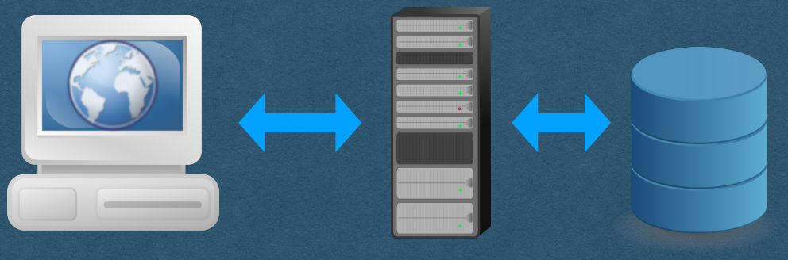
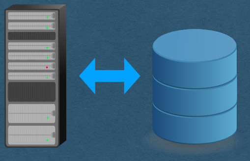
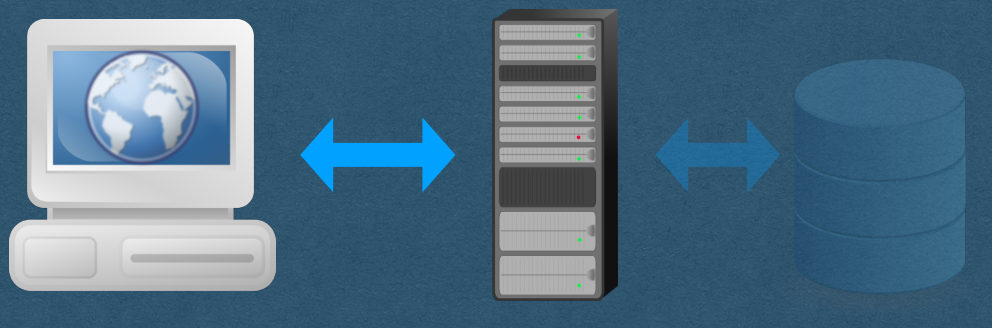
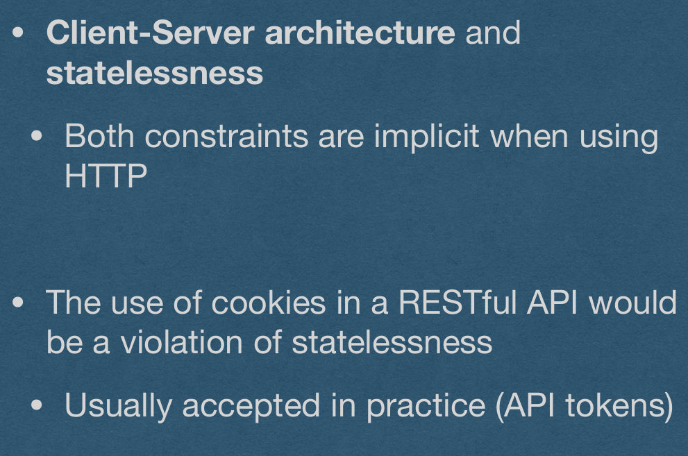
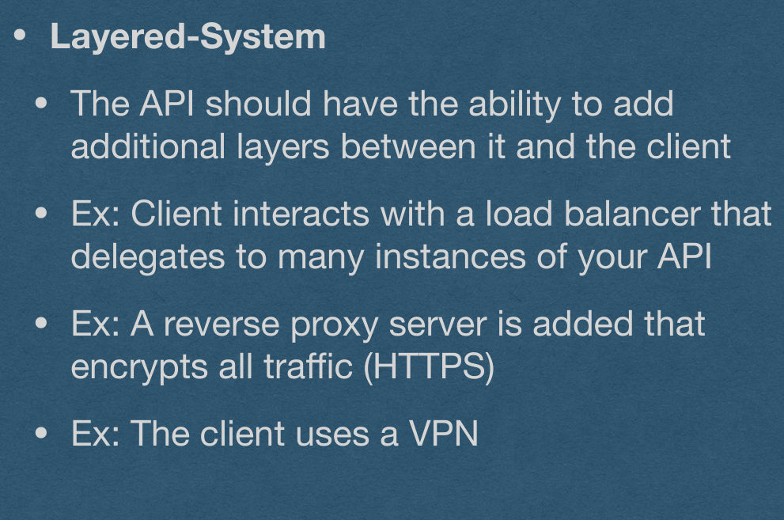
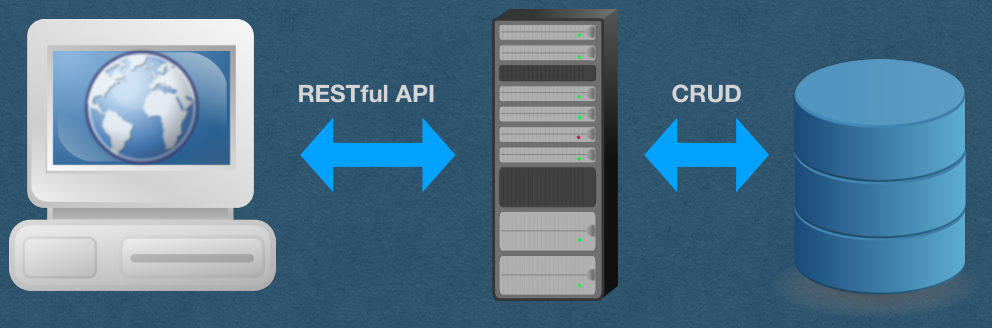

Skip to main content
CRUD and REST API
CSE312 — Web Development
Data
- We now have a database that stores app data
- Users have to control data
- Manage their profile/setting
- Make posts
- Use a shopping cart
- etc.
- How should users interact with stored data?
Data
- How do users interact with stored data?
User/Client
Server
Database

Data
- How does our server interact with stored data?
Server
Database
CRUD
- CRUD is an acronym for the 4 basic operation used to control data
- Create
- Retrive
- Update
- Delete

CRUD - Create
- Create a new record
- INSERT INTO user (?, ?)
- userCollection.insert_one({“email”:“…”, “username”: “…”})
CRUD - Create
- When a record is created, it should be assigned a unique id
- This id will be used to identify the created record
- The id is typically an auto-incrementing integer
- First record had id==1, second has id==2, etc
- MySQL can generate these ids for you
- CREATE TABLE user (id int AUTO_INCREMENT, …)
CRUD - Create
- MongoDB does not have an auto-increment feature
- You can either:
- Manage your own auto-incrementing ids
- Maintain a collection that remembers the last used id
- Increment the id each time a record is created
- Or generate your ids any other way you’d like
- Make sure the id’s are unique
- Id’s must be UTF-8 compatible if they will be used in a url
CRUD - Retrieve/List
- Retrieve all records
- SELECT * FROM user
- userCollection.find({})
- Retrieving all records is often called List
- Technically, the acronym is CRUDL when list operations are allowed
CRUD - Retrieve
- Retrieve a single existing record
- SELECT * FROM user WHERE id=3
- userCollection.find_one({“id”:3})
CRUD - Update
- Update an existing record
- UPDATE user SET email=?, username=? WHERE id=5
- userCollection.update_one({“id”:5}, {“$set”: {“email”:“…”, “username”:“…”}})
CRUD - Update
- Can update all fields except the id
- The id technically can change, but you should never change it
- It is a unique identifier
CRUD - Delete
- Delete an existing record
- DELETE FROM user WHERE id=2
- userCollection.delete_one({“id”:2})
CRUD - Delete
- In practice, common to “soft delete”
- Don’t actually delete the data
- Instead, mark it as deleted
- Do not allow retrieve/update operations on data marked as deleted
- Soft deletion allows sys admins to perform additional operations
- eg. User requests to undo an accidental delete
- Preserves history (Helpful for debugging)
- For your HW, it’s fine to “hard delete”
Data
- How do users interact with our server?
User/Client
Server

HTTP Requests
- GET
- Request data from the server (Retrieve)
- POST
- Send data to the server (Create)
- PATCH
- Update a resource (Update)
- PUT
- Replace an existing record (Update)
- DELETE
- Delete a resource (Delete)
HTTP - POST v. PATCH v. PUT
- Both POST, PATCH, and PUT are all used to send data to the server, but with different expectations
- POST
- Requires the server to process the data
- eg. Generating the id for a created record
- PATCH
- Make a partial update to an existing record
- eg. Update only the content of a chat message, but not the author
- PUT
- Replace an entire existing record
- Must be idempotent
HTTP - Idempotent
- When multiple identical HTTP requests are sent
- If the requests are idempotent, they will have the same effect on the server as sending a single request
- The additional requests will not change the data of the API
- In math terms, if our request is a function f
HTTP - Idempotent
- GET and DELETE are idempotent
- GET should not change the data/state of the API
- Deleting a record twice has the same effect on the API as deleting the record once
HTTP - Idempotent
- PUT must be idempotent
- PUT will replace the entire record with the data of the request
- A second identical PUT doesn’t change anything since the record was already replaced
HTTP - Idempotent
- POST is not idempotent
- Since the server is processing the data, there is no implied idempotent property
- eg. Sending 2 identical POST requests to create a record will result in 2 records being created with different ids
HTTP - Idempotent
- PATCH is not idempotent
- In practice, PATCH endpoints are usually idempotent
- There is no expectation that they must be idempotent
- Eg. A record that tracks a counter or how many times it’s been updated
RESTful API
- REST -> REpresentational State Transfer
- We’ll use HTTP requests to interact with API data
- REST is designed to simplify the way data is used
- Improve reliability and scalability
REST and CRUD
- User sends HTTP requests that correlate to CRUD operations on the data
- POST => Create
- GET => Retrieve
- PUT => Update
- DELETE => Delete
RESTful API
- REST is fairly loosely defined (No RFC)
- Typically measured on a spectrum
- An API can be more/less RESTful
- “We could do that, but it’s not very RESTful”
- “Let’s refactor our API to make it more RESTful”
REST Constraints
- Client-Server architecture and statelessness
- Both constraints are implicit when using HTTP
- The use of cookies in a RESTful API would be a violation of statelessness
- Usually accepted in practice (API tokens)

REST Constraints
- Cacheablility
- Each response must contain caching information
- Requests should be cached if possible
- Avoid stale data from being cached
REST Constraints
- Layered-System
- The API should have the ability to add additional layers between it and the client
- Ex: Client interacts with a load balancer that delegates to many instances of your API
- Ex: A reverse proxy server is added that encrypts all traffic (HTTPS)
- Ex: The client uses a VPN

REST Constraints
- Uniform Interface
- Resources are defined in the requests
- The user is given, in a response, enough information to update/delete the resource
- A request contains all information needed to handle that request
- The API should be self-contained (No reliance on documentation that cannot be accessed from an API path)
Data
- Users interact with our RESTful API
- API requests correlate to CRUD operations
RESTful API
CRUD
User/Client
Server
Database
